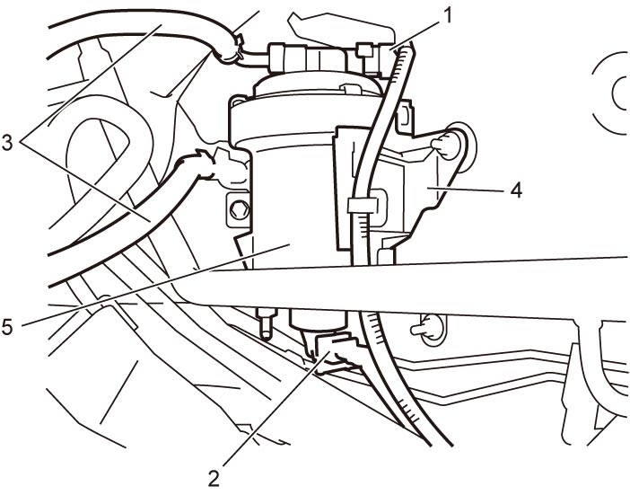

1G
| Fuel Filter Assembly Removal and Installation |
Removal
1)Disconnect negative (–) cable at battery.
2)For RHD model, remove air cleaner assembly. 
3)Disconnect fuel heater connector (1) and fuel filter water detection sensor connector (2).
4)Clean filter and its surrounding area.
5)Disconnect fuel feed hoses (3) from fuel filter.
6)Remove fuel filter (5) from its bracket (4).


 "Expand image")
Installation
Reverse removal procedure noting the following points.
•Bleed fuel system.
•Check for fuel leakage.
•When replacing fuel filter, initialize fuel filter data in ECM.
•Check for fuel leakage.
•When replacing fuel filter, initialize fuel filter data in ECM.